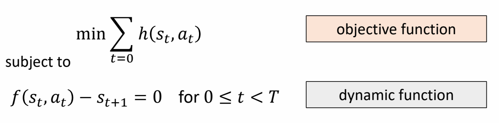

✅ 人体运动涉及到角度旋转，因此是非线性的。
P68
Nonlinear problems

✅ 方法：把问题近似为线性问题。
Approximate cost function as a quadratic function:
✅ 目标函数：泰勒展开，保留二次。
$$ h(s_t,a_t)\approx h(\bar{s}_t ,\bar{a}_t)+\nabla h(\bar{s}_t ,\bar{a}_t)\begin{bmatrix} s_t-\bar{s} _t\\ a_t-\bar{a} _t \end{bmatrix} + \frac{1}{2} \begin{bmatrix} s_t-\bar{s} _t\\ a_t-\bar{a} _t \end{bmatrix}^T\nabla^2h(\bar{s}_t ,\bar{a}_t)\begin{bmatrix} s_t-\bar{s} _t\\ a_t-\bar{a} _t \end{bmatrix} $$
Approximate dynamic function as a linear function:
✅ 转移函数：泰勒展开，保留一次或二次。
$$ f(s_t,a_t)\approx f(\bar{s}_t ,\bar{a}_t)+\nabla f(\bar{s}_t ,\bar{a}_t)\begin{bmatrix} s_t-\bar{s} _t\\ a_t-\bar{a} _t \end{bmatrix} $$
展开为一次项，对应解决算法：iLQR（iterative LQR）
Or a quadratic function:
$$ f(s_t,a_t)\approx \ast \ast \ast \frac{1}{2} \begin{bmatrix} s_t-\bar{s} _t\\ a_t-\bar{a} _t \end{bmatrix}^T\nabla^2f(\bar{s}_t ,\bar{a}_t)\begin{bmatrix} s_t-\bar{s} _t\\ a_t-\bar{a} _t \end{bmatrix} $$
展开为二次项，对应解决算法：DDP（Differential Dynamic Programming）
P69
相关应用
🔎 [Muico et al 2011 - Composite Control of Physically Simulated Characters]
✅ 选择合适的 \(Q\) 和 \(R\)，需要一些工程上的技巧。
✅ 为了求解方程，需要显式地建模运动学方程。
P70
Model-based Method vs. Model-free Method
✅ Model Based 方法，要求 dynamic function 是已知的，但是实际上这个函数可能是（1）未知的（2）不精确的。（3）性质很差，梯度不能带来有用的信息。
✅ 因此Model Based 方法对于复杂问题难以应用，但对于简单问题非常高效。
What if the dynamic function \(f(s,a)\) is not know?
✅ \(f\) 未知只是把 \(f\) 当成一个黑盒子，仍需要根据 \(S_t\) 得到 \(S_{t＋1}\) .
What if the dynamic function \(f(s,a)\) is not accurate?
✅ 不准确来源于（1）测量误差（2）问题简化
What if the system has noise?
What if the system is highly nonlinear?
本文出自CaterpillarStudyGroup，转载请注明出处。
https://caterpillarstudygroup.github.io/GAMES105_mdbook/